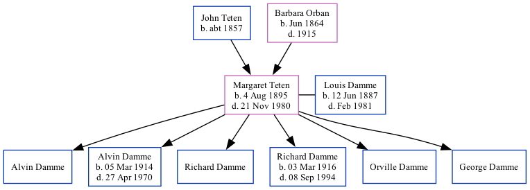

Margaret Damme (née Teten) 1895 - 1980
[ Home ] | [ Surnames Index ] | [ Family History ]The child of John Teten and Barbara Orban, , Margaret was the great-great-aunt of Stephanie Hardesty (née Teten), was born in Nebraska, USA on Aug 4, 18951,2,3,4,5 and married Louis Damme (with whom she had 6 children: Alvin L, Alvin L, Richard G, Richard G, Orville F and George W) on Feb 5, 1913.
During her life, she was living in Nebraska City Ward 4, Otoe, Nebraska in 19001 and in 19102; in Nebraska Ward 4, Otoe, Nebraska in 19203; and in McWilliams, Otoe, Nebraska in 19304.
She died on Nov 21, 1980 in Los Angeles5.
Parents
- John J was born c. 1857
- Barbara was born in Jun 1864
Children
- Alvin L
- Alvin L was born on Mar 5, 1914
- Richard G
- Richard G was born on Mar 3, 1916
- Orville F
- George W
Citations
- 1900 United States Federal Census Ancestry.com Operations Inc (Age: 4; Marital Status: Single; Relation to Head of House: Daughter)
- 1910 United States Federal Census Ancestry.com Operations Inc (Age in 1910: 14; Marital Status: Single; Relation to Head of House: Daughter)
- 1920 United States Federal Census Ancestry.com Operations Inc (Age: 24; Marital Status: Single; Relation to Head of House: Daughter)
- 1930 United States Federal Census Ancestry.com Operations Inc (Age: 40; Marital Status: Married; Relation to Head of House: Wife)
- California, Death Index, 1940-1997 Ancestry.com Operations Inc
Family Tree
Data (GEDCOM) maintained by Jay Weston Hannah, Omaha, Nebraska, USA.
Website generated by ged2site. Last updated on Jun 18, 2024.